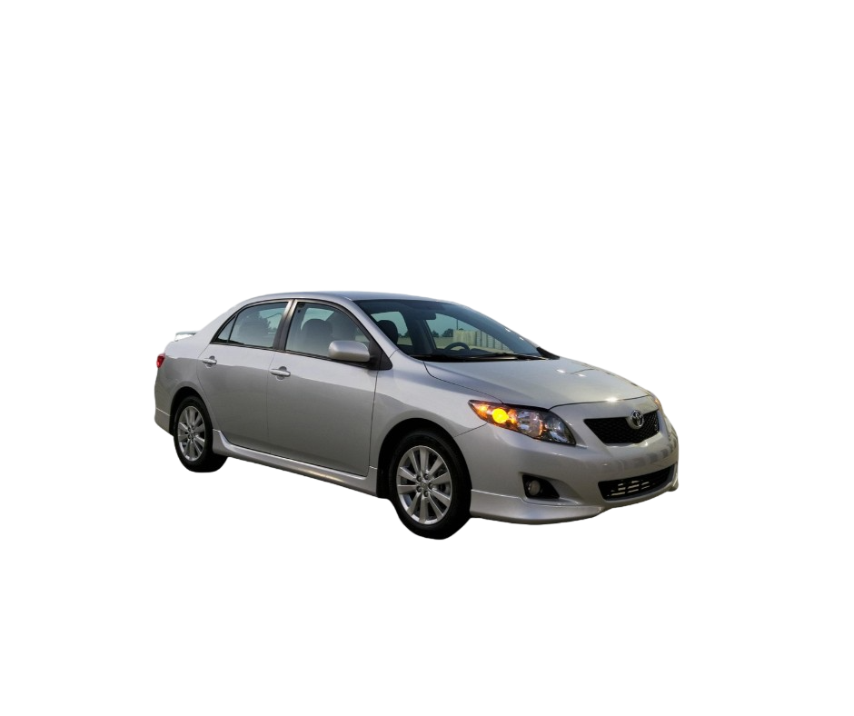

USED CARS FOR SALE
 Toyota Corolla is available in 1 engine option(s) i.e. Petrol. The Toyota Corolla is capable of generating a horsepower of 84 - 138 HP with a top speed of 180 - 240 KM/H. Toyota Corolla is available in 2 transmission option(s) i.e Manual & Automatic. The Corolla car has a fuel average of 8 - 14 KM/L with a fuel tank capacity of 55L.the Corolla has a seating capacity of 5 persons. For more Click Here
-Photoroom.png) Toyota Land Cruiser V8 Specifications ; Ground Clearance, 220 - 275 mm ; Displacement, 4461 - 4663 cc ; Transmission, Automatic & Manual ; Horse Power, 215 - 318 hp. For more Click Here
Toyota Land Cruiser V8 Specifications ; Ground Clearance, 220 - 275 mm ; Displacement, 4461 - 4663 cc ; Transmission, Automatic & Manual ; Horse Power, 215 - 318 hp. For more Click Here
-Photoroom.png) It is the best 7 seater suv for off roading the engine size of 2700cc makes it feel a litt ... ... It is equipped with 2.7 petrol engine..performance wise SUV is ... For More Click Here
It is the best 7 seater suv for off roading the engine size of 2700cc makes it feel a litt ... ... It is equipped with 2.7 petrol engine..performance wise SUV is ... For More Click Here
-Photoroom.png) Brand New Toyota Corolla Grande market price in Pakistan with Model, prices, specification, features, colors, reviews, gallery with interior and exterior, ... For More Click Here
Brand New Toyota Corolla Grande market price in Pakistan with Model, prices, specification, features, colors, reviews, gallery with interior and exterior, ... For More Click Here
-Photoroom.png) The price of Honda Civic RS in Pakistan is PKR 9,899,000. This price of Civic RS is ex-factory and does not include freight, taxes and other documentation ... For More Click Here
The price of Honda Civic RS in Pakistan is PKR 9,899,000. This price of Civic RS is ex-factory and does not include freight, taxes and other documentation ... For More Click Here
-Photoroom.png) The price of a used Honda Civic Turbo 1.5 VTEC CVT in Pakistan starts from PKR 4,455,000. This price of Civic Turbo 1.5 VTEC CVT in Pakistan varies on model ... For More Click Here
The price of a used Honda Civic Turbo 1.5 VTEC CVT in Pakistan starts from PKR 4,455,000. This price of Civic Turbo 1.5 VTEC CVT in Pakistan varies on model ... For More Click Here